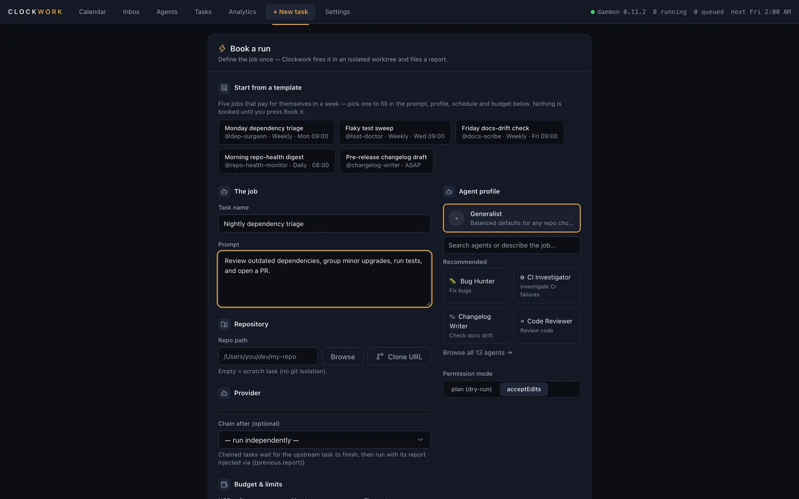
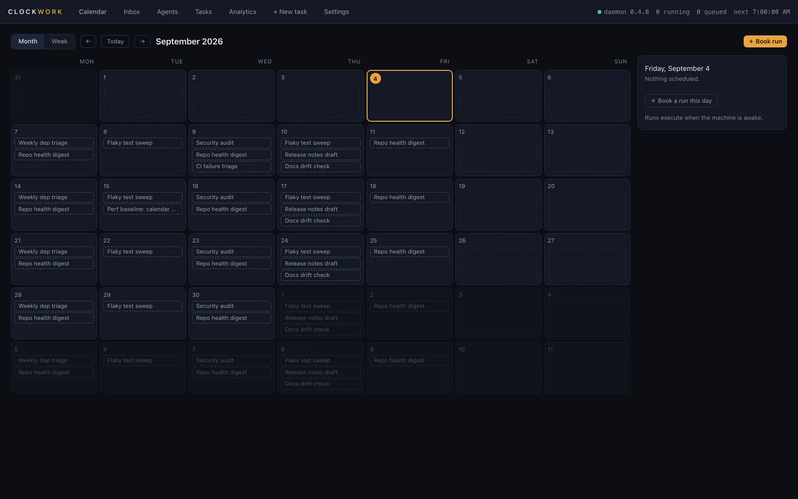
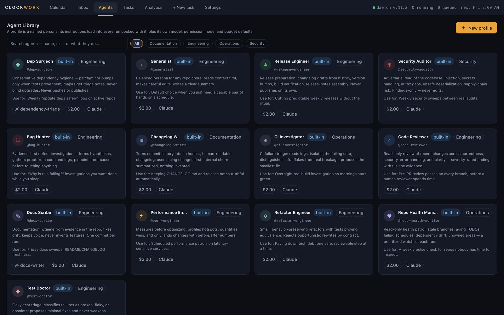
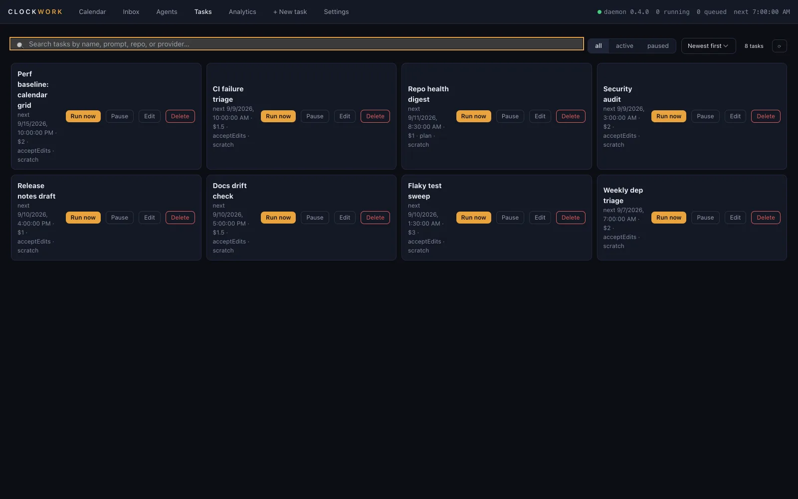

07:00Monday
You book it like a meeting.
Pick a profile, a repository, a budget in dollars and a time. One-off, recurring, or fired by a webhook. Chain a second agent to run after the first.

Book Claude Code, Codex, OpenCode or Hermes like a meeting. Clockwork runs it sandboxed and files a readable report.
agent shift, doneagent shift, bookedyour calendar, over ICSwaiting for youExample week. Costs are illustrative.
Pick a profile, a repository, a budget in dollars and a time. One-off, recurring, or fired by a webhook. Chain a second agent to run after the first.

Your own CLI login does the work, in its own git worktree, under a macOS Seatbelt profile. Your checkout is never touched.
Every run files the same document into your inbox. Credentials are masked, best effort, before it is stored. Every report and transcript is full-text searchable.
Recurrence is real calendar recurrence: RRULE or cron in your own time zone, daylight-saving handled, a policy for missed runs, and one run per repository at a time.
Each one is an operating contract: a mission, hard limits, and a fixed shape for the report. These are the names you will see in the app.
Write your own in the app: pick skills, a permission mode, budget defaults and a system prompt.



The month view. Every booking on one grid, colour-coded by profile.
The agent library, and every task with its next run and budget.
The sandbox profile, the credential deny-list and the run-environment allowlist are published under Apache-2.0 with the tests that prove them, in packages/runner. What they do not prove is that a downloaded build matches the source; releases come from CI with published checksums, and reproducible builds are not yet supported. Jobs run when your Mac is awake; for true overnight work, use an always-on machine.
Everything below ships in version 0.12.0. Where something is still in beta, the row says so.
{{previous.report}}.$ brew tap vimoxshah/clockwork $ brew trust vimoxshah/clockwork $ brew install --cask clockwork $ xattr -dr com.apple.quarantine /Applications/Clockwork.app # or by hand: download the DMG, then $ shasum -a 256 -c checksums-sha256.txt # the checksums file is the source of truth — a hash pasted # here would go stale every release and a mismatch would look # like tampering when it was only out of date $ open -a Clockwork
Clockwork is not notarised by Apple. The build is unsigned, so macOS quarantines it and the last command clears that flag. Homebrew verifies the checksum first. The download buttons on this page fetch the DMG directly from the GitHub release; verify it against checksums-sha256.txt before you clear anything. Older builds are on the releases page.
brew trust is needed because Homebrew refuses casks from third-party taps by default. You are saying you trust this one.
Every line below is read from the same feature registry the daemon ships, and a test in the repository holds this page to it. No account, no card and no telemetry on any tier.
Free
$0personal, non-commercial use
Pro
Builtnot priced yet
Teams
Builtnot priced yet
Commercial use of any tier needs a written licence. Ask for one, or ask to be told when Pro and Teams go on sale.
No. Clockwork drives the CLI you already log into: Claude Code, Codex, OpenCode or Hermes. You can also bring your own API keys; they are stored in the macOS Keychain and billed by the provider, never marked up.
No. Runs execute only while the Mac is awake. When the Mac is plugged in, Clockwork arms a power assertion before a scheduled run; a closed lid on battery defeats it, and the report says so. A missed run follows the policy you chose: run late, skip, or ask. For true overnight work, use an always-on Mac.
The build is not notarised, so Gatekeeper refuses it until the quarantine flag is cleared. Verify the checksum first, then run the xattr command from the install section.
In a folder in your home directory, in SQLite. The daemon listens on the loopback interface only. Nothing is sent anywhere unless you configure a delivery target yourself.
No. Each run works in its own worktree on its own branch. A global deny-list that no profile can override blocks force-pushes to protected branches and package publishing, and journals every attempt.
Nothing for personal, non-commercial use. Commercial use needs a licence; email for one. Provider usage is always a separate bill.
Apple silicon or Intel, macOS 13 or newer, 50.9 MB. Version 0.12.0.